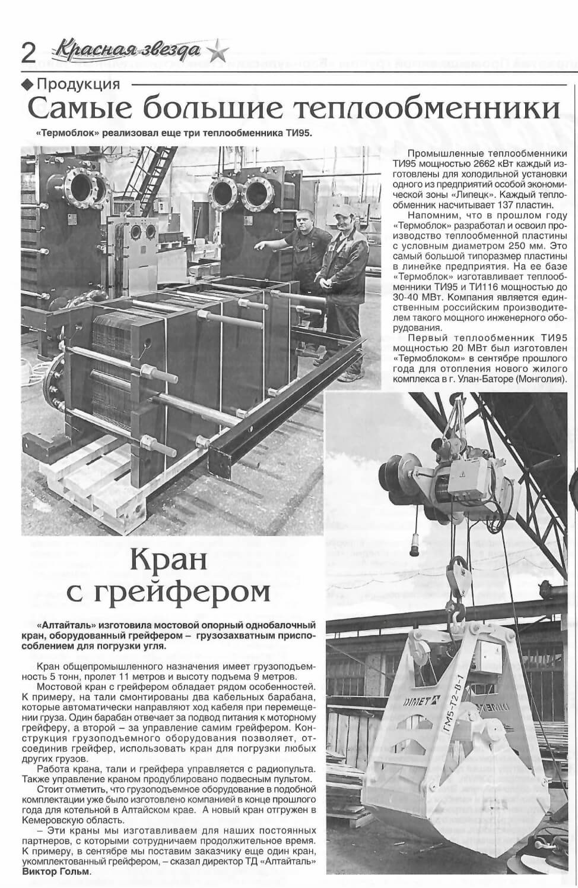

ООО "Термоблок" с 2011 года последовательно ведет работу по разработке российского теплообменного оборудования. Импортозамещение в данном сегменте на данный момент очень актуально, но особенно выделяются крупные пластинчатые теплообменники ДУ 250. Внимания заслуживают и другие изделия, изготавливаемые на предприятиях промышленной группы Барнаульский станкостроительный завод.
Промышленные теплообменники ТИ95 мощностью по 2662 кВт изготовлены для холодильной установки одного из предприятий особой экономической зоны "Липецк".
Напомним, в 2021 году мы разработали и освоили серийное производство пластины с условным диаметром 250 мм. На ее базе изготавливаются теплообменники ТИ95 и ТИ 116 мощностью 30-40 мВт.
О том, как разрабатывалась пластина теплообменника и запускалась в серийное производство можно прочитать здесь.
Газета зарегистрирована Управлением Федеральной службы по надзору в сфере связи, информационных технологий и коммуникаций по Алтайскому краю и Республике Алтай. ПИ № ТУ22-00643 от 2 марта 2015 г.